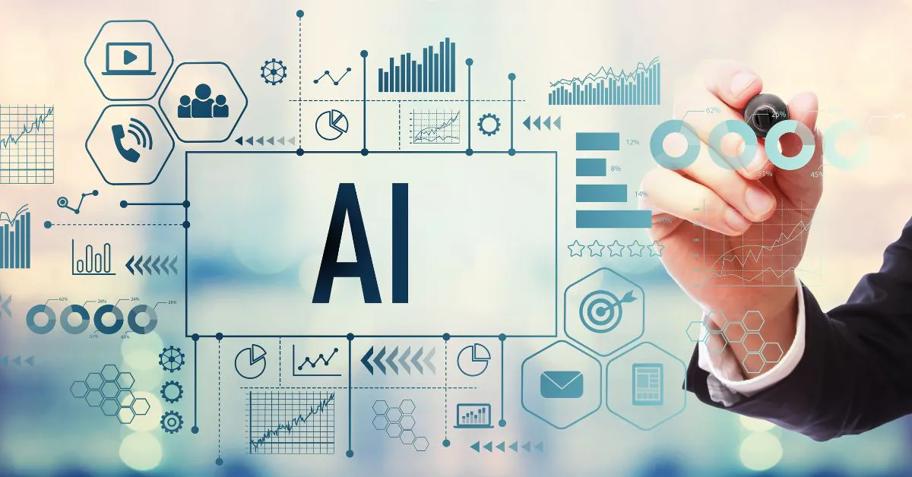

Exploring the Best AI Tools for Various Applications
Published on August 21, 2023
Artificial Intelligence (AI) has revolutionized the way we approach various tasks and industries. In this blog post, we will explore some of the best AI tools available that cater to different applications.
1. TensorFlow: TensorFlow is an open-source machine learning framework developed by Google. It's widely used for building and training various machine learning models, from simple linear regression to complex neural networks.
2. OpenAI's GPT-3: GPT-3, developed by OpenAI, is a cutting-edge language model that can generate human-like text. It's used for various applications, including chatbots, content generation, and code completion.
3. IBM Watson: IBM Watson offers a suite of AI-powered tools for businesses. It provides solutions for natural language processing, image recognition, and data analysis, making it a versatile choice for enterprises.
These are just a few examples of the many AI tools available today. As AI continues to advance, we can expect even more innovative tools to emerge, reshaping industries and enhancing human capabilities.